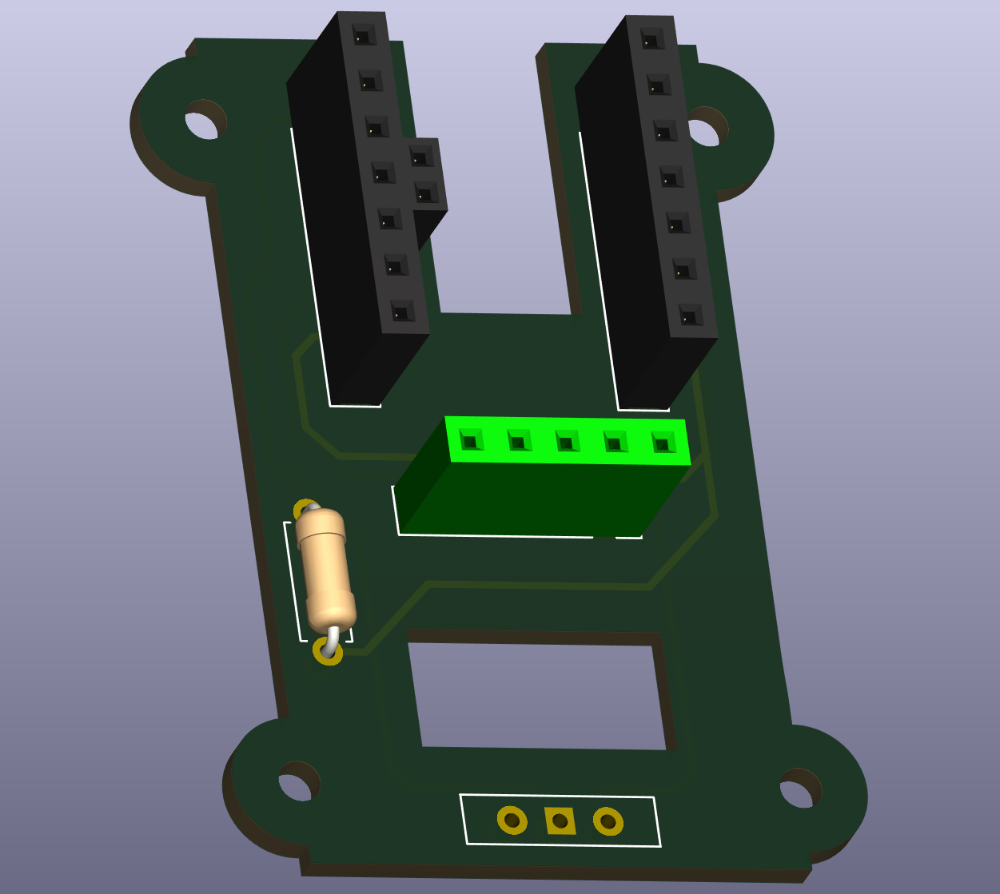
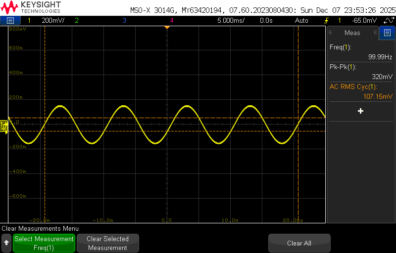

Selected Engineering Projects
Engineering projects spanning embedded systems, control systems, firmware development, analog circuit design, sensing, and software. Each detailed project page documents the design approach, implementation, validation, results, and supporting technical material.
Wearable Haptic Feedback System for Skill Reinforcement
2026Developed a battery-powered ESP32-C3 wearable integrating custom PCB hardware, embedded C++ firmware, BLE communication, and LRA haptic feedback. Implemented configurable tactile feedback and wireless mobile integration for real-time athletic training.
View Project →
Optical Heart Rate Sensor
2026Developed a four-stage non-invasive optical heart rate sensor using infrared photoplethysmography, cascaded active high-pass and low-pass filters, and comparator-based pulse detection. Frequency response analysis measured a 0.370–5.03 Hz passband with 54.87 V/V peak gain, while functional testing measured 90 BPM against a 93 BPM reference.
View Project →
Smart HVAC System for Microclimate Control
2026Developed an Arduino-based closed-loop microclimate controller using temperature feedback and PWM-controlled ventilation. Implemented proportional control with a temperature deadband and minimum fan-speed threshold, while providing real-time temperature monitoring and joystick-adjustable setpoints through an LCD interface.
View Project →
3-Band Audio Equalizer
2025Led, designed, constructed, and experimentally validated a three-band analog audio equalizer using passive RC filters, op-amp gain stages, signal recombination, and a power amplifier capable of driving an 8 Ω speaker. Verified frequency response from 100 Hz–10 kHz within ±2 dB across all bands.
View Project →
555-Timer PWM LED Dimmer
2025Built, characterized, and tested a 555-timer PWM LED dimmer in astable mode with potentiometer control, achieving a controllable duty-cycle range of approximately 11–97% at a fixed switching frequency. Verified monostable and astable timing behavior experimentally.
View Project →
Final Exam Calculator
2026Built a responsive JavaScript web application that calculates the final exam score required to reach a target course grade. Implemented dynamic assignment entry, flexible category weighting, input validation, persistent browser storage, and light/dark themes.
View Project →